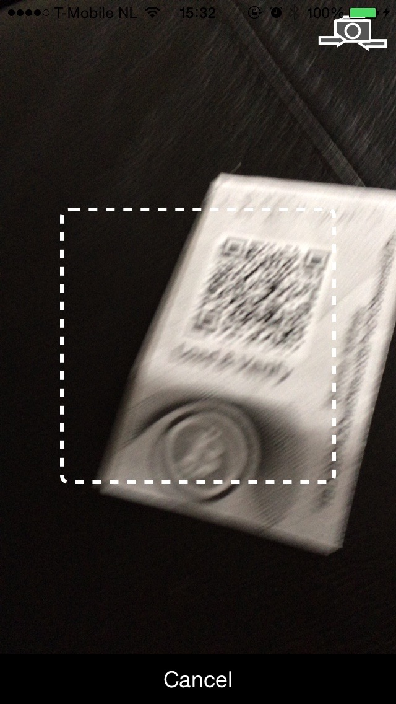
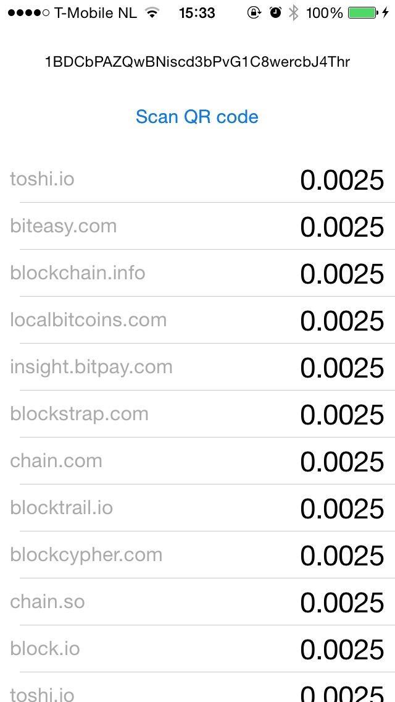

Paper Waller Checker
Paper Wallet Checker allows you to check the balance of your paper wallet by scanner the QR code.
Paper Wallet Checker fetches the balance by checking several blockchain services. It currently checks:
- biteasy.com
- block.io
- blockchain.info
- blockcypher.com
- blockexplorer.com
- blockstrap.com
- blocktrail.com
- blockr.io
- chain.com
- chain.localbitcoins.com
- chain.so
- coinprism.info
- insight.bitpay.com
- luxstack.com
- toshi.io
- tradeblock.com
It works only for Bitcoin wallets.
Screenshots


Requirements
- iOS 8.3 / Mac OS X 10.10
- Xcode 6.3
- CocoaPods (website)
Building Paper Wallet Checker
- Download the code
- Install pods (pod install)
- Open workspace
- Rename ApiKeys.plist.dist to ApiKeys.plist
- Enter api keys in ApiKeys.plist
- Build and run
Usage
- Open Paper Wallet Checker
- Tap "Scan QR code"
- Allow camera access
- Point at the public key QR code of the paper wallet
Notes about confirmed/unconfirmed balance
Some of the services respond with confirmed balance and some with unconfirmed balance also.